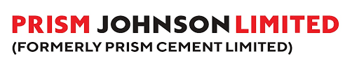

Organizations I've Worked For

Prism Johnson Limited
 Tiger Analytics
Tiger Analytics
 Mokkup.ai
Mokkup.ai
Hi, I'm Ujjwal Kumar Shukla, a passionate and results-driven Product Manager with over 3.5 years of experience in the Product, Analytics, and Marketing industry. With a strong foundation in the B2B SaaS industry and a keen eye for product development, I have successfully overseen the development and growth of products from the initial stages to scaling up to over 60,000 users (in the last 19 months).
My professional journey began with an MBA from IIT Kanpur, which provided me with a solid foundation in business and management principles. Over the years, I have honed my skills in various aspects of product management, including:
I pride myself on my ability to make data-driven decisions, perform A/B testing, and understand user behavior to drive product success. In addition to my core product management skills, I am well-versed in using various tools and technologies essential for modern product management and digital marketing. These include Power BI for data visualization, SQL for database management, Jira for project tracking, GA4 for analytics, Klaviyo for email marketing, and Google Ads and Meta Ads for digital advertising.
My passion for product management is driven by a constant desire to learn and adapt. This enthusiasm keeps me ahead in the ever-evolving field of digital marketing and product management, ensuring I can contribute effectively to any team or project.
Thank you for visiting my profile. I look forward to connecting with you and exploring potential opportunities where I can contribute my expertise and experience.
Tiger Analytics
Mokkup.ai